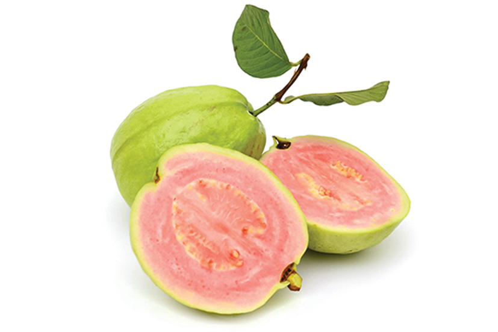

📖 總論
芭樂（番石榴，Psidium guajava L.）為桃金孃科番石榴屬常綠小喬木，原產於中南美洲，經由早期移民傳入亞洲，已成為臺灣最重要的常年鮮食水果之一。臺灣全年均可生產芭樂，栽培面積約 7,000–8,000 公頃，年產約 18–20 萬公噸。
品種分為綠皮白肉（更年性）與紅肉/特色品種兩大類。白肉以珍珠拔為絕對主力（約佔 80% 以上），產地以高雄燕巢最負盛名；紅肉則以宜蘭紅肉拔、彩虹拔為代表。臺灣芭樂品種多樣性極高，涵蓋無籽系、軟肉系、脆肉系、香氣系等多元風味。


左：珍珠拔 — 市佔率 80% 以上的絕對主力 ｜ 右：紅肉番石榴 — 富含茄紅素與類胡蘿蔔素
📈 產業發展概況
🗺️ 主要產地分布
| 排名 | 縣市 | 約佔比 | 代表產區 |
|---|---|---|---|
| 1 | 高雄市 | 35–40% | 燕巢（珍珠拔發源地）、大社、岡山 |
| 2 | 彰化縣 | 20–25% | 溪州、社頭（帝王拔、珍珠拔） |
| 3 | 臺南市 | 10–15% | 玉井、楠西、大內 |
| 4 | 宜蘭縣 | 5–8% | 員山（宜蘭紅肉拔特產區） |
| 5 | 屏東縣 | 5–8% | 高樹、里港 |
🌤️ 全年生產的祕密：芭樂為少數可周年生產的水果，透過修剪調節產期。秋冬（10–2 月）為品質最佳季節，果肉厚脆、糖度高；夏季高溫時果實成熟快、肉質易軟化，需慎選品種（帝王拔、珍翠等夏季表現較佳）。
⚖️ 產業優勢與挑戰
✅ 優 勢
周年可供應 — 透過修剪調節，全年無休生產
珍珠拔品牌效應 — 燕巢珍珠拔知名度極高，市場指名度強
品種多元 — 從脆肉到軟肉、白肉到紅肉、有籽到無籽，滿足各類消費者
高營養價值 — 維生素 C 含量為柑橘類 3–5 倍，紅肉種更富含茄紅素
⚠️ 挑 戰
夏季品質不穩 — 高溫期果肉易軟化、脆度下降，影響商品價值
果實蠅威脅 — 東方果實蠅為最大病蟲害，套袋成本高
立枯病／根瘤線蟲 — 部分品種對土壤病害敏感
修剪管理費工 — 產期調節需精密修剪技術，勞動力需求高
📂 品種分類總覽
依農業部農業知識入口網正式分類：
🟢 綠皮白肉系（脆肉）
更年性品種 · 10 品種
珍珠 · 帝王 · 水晶 · 世紀 · 珍翠🔴 紅肉／特色品種
非更年性品種 · 6 品種
紅肉 · 彩虹 · 斑葉 · 水蜜 · 無子🟢 一、綠皮白肉系（更年性 · 脆肉型）
珍珠拔 絕對主力 · 80%+
珍珠拔：臺灣芭樂的代名詞，市佔率 80% 以上，以高雄燕巢為核心產區（圖：農業部）
| 項目 | 特徵 |
|---|---|
| 果實 | 秋冬季果肉較厚且細緻，糖度高；夏季高溫時果肉易軟化、脆度較差 |
| 風味 | 具特殊甘味與芳香，酸度適中 |
| 產期 | 10 月以後品質較佳且穩定，生產宜避開夏季高溫期 |
| 植株 | 樹形開張、枝條具韌性；修剪後結果枝抽生比率高 |
| 栽培 | 果實罹病率低，栽培管理較省工 |
| 優點 | 品質穩定、管理省工、市場指名度高 |
| 缺點 | 夏季高溫果肉易軟化，脆度下降 |
帝王拔 夏季優勢品種

帝王拔：農試所鳳山分所育成，珍珠拔 × 無籽拔雜交後代，夏季仍保持厚脆口感（圖：農業部）
| 項目 | 特徵 |
|---|---|
| 育成 | 農業試驗所鳳山分所育種命名，為珍珠拔與無籽拔雜交後代 |
| 果實 | 果肉質脆、果肉較厚；夏季果肉仍厚質脆（最大優勢） |
| 風味 | 酸度略高（低溫期酸度偏高） |
| 缺點 | 腐果率較高，低溫期酸度偏高，管理較費工 |
水晶拔 無籽品種

水晶拔：由泰國拔變異而來，種子極少的無籽芭樂品種（圖：農業部）
| 項目 | 特徵 |
|---|---|
| 來源 | 泰國拔變異而來 |
| 果實 | 扁圓形，果面有不規則突起；種子極少（無籽芭樂） |
| 果肉 | 肉質脆，但果頂與果肩糖度差異甚大 |
| 授粉 | 自然著果率高於一般圓葉無籽品種，無須特別藥劑處理 |
| 缺點 | 產量仍偏低；夏季果實易罹病；枝條較脆 |
高雄 2 號─珍翠 最新品種

高雄2號珍翠：圓果型綠皮白肉，選育自印尼種紅肉番石榴後代，已專屬授權（圖：農業部）
| 項目 | 特徵 |
|---|---|
| 育成 | 選育自印尼種紅肉番石榴的天然授粉種子之後代 |
| 果實 | 圓果型綠皮白肉，果重約 530 g（中大果）；果皮「起珠仔」特徵明顯、賣相佳 |
| 果肉 | 細緻；夏季果肉厚度較珍珠拔增加 20% |
| 糖度 | 夏季糖度約較珍珠拔高 1–2 °Brix |
| 栽培 | 容易管理且產量高；定植初期需注意線蟲防治 |
| 授權 | 已專屬授權潘連進先生（0919754319） |
世紀芭樂

世紀芭樂：傳統脆肉品種，果形圓整美觀（圖：農業部）
| 項目 | 特徵 |
|---|---|
| 果實 | 圓整美觀，果皮翠綠 |
| 果肉 | 白肉脆甜，為傳統長銷品種 |
| 定位 | 中部地區仍有穩定栽培面積 |
其他綠皮白肉品種
| 品種 | 特徵摘要 |
|---|---|
| 圓葉無籽拔 | 葉片圓形、種子極少，屬無籽芭樂品系；著果率較水晶拔低，需藥劑輔助 |
| 東山月拔 | 臺南東山地方品種，果形較小，風味獨特 |
| 巴西捲葉拔 | 引自巴西，葉片捲曲為外觀特徵，果實風味佳 |
| 香拔 | 具特殊香氣，果實偏小，適合特色栽培 |
🔴 二、紅肉／特色品種（非更年性）
紅肉番石榴 茄紅素 · 高營養
紅肉番石榴：紅色來自類胡蘿蔔素及茄紅素，維生素 C 含量 72.2 mg/100g
紅肉番石榴主要分為兩大品系：
宜蘭紅肉拔
| 項目 | 特徵 |
|---|---|
| 產地 | 宜蘭縣員山鄉枕山地區 |
| 果實 | 小果型，果重 120–204 g，果肉厚約 1.3 cm，可食率 35% |
| 糖度 | 8–11 °Brix |
| 風味 | 口感軟嫩香 Q，不會軟爛 |
| 產期 | 9 月至 12 月底 |
| 特色 | 屬於容易軟熟的品種，但因宜蘭獨特水質與氣候，仍保有香 Q 口感 |
彩虹拔（西瓜芭）
| 項目 | 特徵 |
|---|---|
| 產地 | 發源於彰化，高屏地區約 10 公頃 |
| 果實 | 中果型，300–600 g，果肉厚 2–2.5 cm，卵圓形；可食率 45–50% |
| 糖度 | 8–12 °Brix |
| 風味 | 口感清脆，具類似百香果的獨特果香 |
| 特色 | 「非更年型」果實，成熟後果肉不會軟化、儲放時間長；果皮綠色與果肉紅色之間有白色果肉層，故稱「西瓜芭」 |
無子水蜜拔 無籽 · 爽脆

無子水蜜拔：幾乎完全無籽，口感爽脆，品質佳（圖：農業部）
| 項目 | 特徵 |
|---|---|
| 果實 | 幾乎完全無籽 |
| 果肉 | 口感爽脆，品質佳 |
| 授粉 | 開花及著果情形較水晶拔良好 |
| 植株 | 生長勢較弱，抽梢速度較慢 |
其他紅肉及特色品種
| 品種 | 特徵摘要 |
|---|---|
| 斑葉紅肉拔 | 葉片具斑紋為外觀特徵，果肉紅色，兼具觀賞與食用價值 |
| 印尼紅皮紅肉拔 | 引自印尼，果皮帶紅色，果肉深紅，風味濃郁 |
| 宜蘭紅心拔 | 宜蘭地方紅肉品種，與紅肉拔為近親品系 |
| 草莓番石榴與檸檬番石榴 | 兩種特殊風味品種：草莓番石榴果小如草莓、帶莓果香；檸檬番石榴帶柑橘清香 |
📊 品種綜合對比表
| 品種 | 肉色 | 果重(g) | 糖度(°Brix) | 籽 | 核心特色 |
|---|---|---|---|---|---|
| 珍珠拔 | 白 | — | 高 | 有 | 市佔 80%+ · 燕巢代表 |
| 帝王拔 | 白 | — | — | 有 | 夏季仍厚脆 · 雜交新品 |
| 水晶拔 | 白 | — | 不均 | 極少 | 無籽 · 扁圓形 |
| 珍翠 | 白 | 530 | 珍珠+1-2° | 有 | 夏季肉厚+20% · 起珠仔賣相佳 |
| 世紀芭樂 | 白 | — | — | 有 | 圓整美觀 · 長銷品種 |
| 宜蘭紅肉拔 | 紅 | 120–204 | 8–11 | 有 | 軟嫩香Q · 宜蘭特產 |
| 彩虹拔 | 紅 | 300–600 | 8–12 | 有 | 清脆百香果香 · 不軟化 |
| 無子水蜜拔 | 白 | — | — | 極少 | 完全無籽 · 爽脆 |
🛒 選購消費指南
🔍 通用選購要領：
外觀：果皮翠綠有光澤、無軟爛或黑斑
觸感：按壓結實有彈性（脆肉型）；微軟為軟肉型正常
果形：圓整對稱、無畸形
季節：秋冬（10–2 月）為品質最佳季節
外觀：果皮翠綠有光澤、無軟爛或黑斑
觸感：按壓結實有彈性（脆肉型）；微軟為軟肉型正常
果形：圓整對稱、無畸形
季節：秋冬（10–2 月）為品質最佳季節
🔬 各品種口感速查：
- 珍珠拔：經典脆甜 — 最百搭，適合所有族群
- 帝王拔：夏季仍脆 — 夏天想吃脆芭樂的首選
- 水晶拔：無籽脆甜 — 不喜歡吐籽的人最愛
- 珍翠：夏季高甜 — 最新品種、潛力股
- 宜蘭紅肉拔：軟嫩香 Q — 適合老人小孩
- 彩虹拔：清脆百香果香 — 獨特風味愛好者必試
🏢 北農交易代碼對照
以下為本圖鑑收錄品種與臺北農產運銷公司果菜品名代碼對照：
| 北農代碼 | 北農品名 | 對應圖鑑品種 |
|---|---|---|
| P1 | 珍珠芭（芭樂） | 珍珠拔（絕對主力，80%+） |
| P2 | 紅心芭 | 紅肉番石榴 |
| P3 | 帝王芭 | 帝王拔 |
| P4 | 世紀芭 | 世紀芭樂 |
| P5 | 水晶無仔 | 水晶拔 |
| P0 | 其他 | 高雄2號珍翠、無子水蜜拔、其他綠皮白肉及紅肉特色品種 |